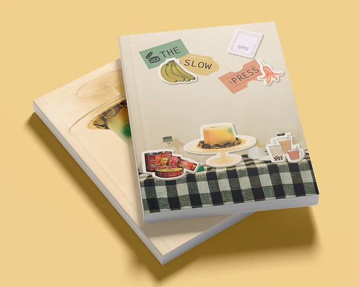
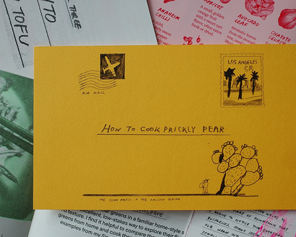

- 
Volume 6: Best Before
The Slow Press Vol. 6: BEST BEFORE features 9 rich food stories centered around time and change, written, designed, illustrated, and photographed by The Slow Press team and our amazingly talented contributors over the course of 2023.
Find out more → Get a copy → 
Talk Cock Sing Song
Talk Cock Sing Song, a zine by The Slow Press and Kenn Lam, is an intersection between the fantasies and realities of chicken, a commodity that plays a significant role in Singaporean diets. Living in a nation that prides itself on its Hainanese Chicken Rice, the writers explore their personal connection to poultry and the role they play in a local context.
Find out more → Get a copy →- 
How to Cook Prickly Pear
How to Cook a Prickly Pear isn’t just a zine—it is a package from the writer to the reader, through five beautifully crafted chapters, and more snippets. Capturing Mun Yi’s immigrant story through the flavors of Singapore and LA (with make-it-your-own recipes!), she spent months in the kitchen experimenting with ingredients from her local markets while reminiscing dishes from home.
Find out more → Get a copy →